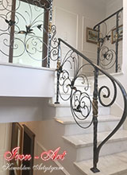
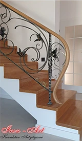
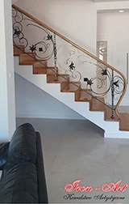
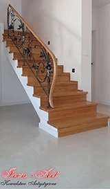

{kind=link}


{kind=link}

{kind=link}

{kind=link}

Nasza firma specjalizuje się w wykonywaniu balustrad schodowych, ręcznie zdobionych, oryginalnych o niepowtarzalnych wzorach.
W pracowni kowalstwa artystycznego Iron-Art Łódź, tworzymy balustrady schodowe kute, które projektujemy według własnego pomysłu lub na zamówienie Klientów. Balustrady kute do schodów są wykonane w zamyśle stylu ArtDeco, okresu secesyjnego, barokowego lub gotyku.
Niepowtarzalne projekty balustrad schodowych
W ramach usług zapewniamy przygotowanie indywidualnego, dopasowanego do oczekiwań Klienta projektu balustrady schodowej, którą wykonamy z największą precyzją i dbałością o detale. Oferujemy również możliwość zakupu gotowego projektu balustrady.
Zaletą współpracy z naszą firmą jest fakt, że do każdego zlecenia podchodzimy priotytetowo, zapewniając wysokiej jakości obsługę, doradztwo i stały kontakt. Przygotujemy projekt balustrady kutej schodowej, który najlepiej wpisze się w gusta i potrzeby Klienta oraz doskonale dopasuje się do wystroju wnętrz.
Zapraszamy do zapoznania się z balustradami schodowymi kutymi, które dotychczas wykonaliśmy w naszej pracowni kowalstwa artystycznego Iron-Art Łódź.